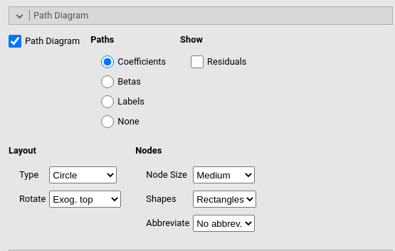

Simple models
keywords multiple regression, path analysis, lavaan, multivatiate regression,jamovi,semlj
In this example we show how to estimate simple regression models with
SEMLj. The aim is threefold: first, it
may help seeing how the SEM module can estimate path analysis, and see
how path analysis encompasses models usually estimated with the General
Linear Model (but look at GAMLj
module for a specialized module in jamovi).
Second, we are going to estimate some models discussed in UCLA statistical
consulting webpage, so one can compare the results obtained in
lavaan with the ones obtained in SEMLj. Third, we show how to add some
interesting test and twist to simple regression models.
We show input of both SEMLj interactive (GUI) sub-module and the syntax sub-module. Outputs are the same for the two sub-modules.
Much of the output that SEMLj produces is labeled as it is in lavaan R package output, so lots of information can be found in lavaan help and tutorials
Research data
The data we use can be found here at UCLA. The sample is composed by 500 students, each with 9 observed variables: Motivation (motiv), Harmony (harm), Stability (stabi), Negative Parental Psychology (ppsych), SES, Verbal IQ (verbal), Reading (read), Arithmetic (arith) and Spelling (spell). They are all continuous variables.
Simple regression (Model 1A)
First, we estimate a simple regression with read as dependent (endogenous) variable and motiv as independent (exogenous) variable.
Input
Since we have only observed variables, we need to set the latent variable as equal to the observed variable. This is done simply by selecting only one observed variable per latent variable.
Interactive module
In SEMLj interactive sub-module we set the variables roles in the first panel as shown here: The dependent variable goes in the Latent Endogenous Variables field, and the independent variable goes in the Latent Exogenous Variables field.
We also name the latent variables l_read and
l_motiv to distingish them from the observed variables.
Syntax module
In SEMLj interactive
sub-module we achieve the same model definition using
lavaan syntax. We specify the endogenous variable predictor
in the Endogenous Models panel.
In SEMLj syntax sub-module
we achieve the same model definition with lavaan syntax.
Note that in the syntax sub-module we could have used path
analysis syntax (read~motive), but here we want to show the
exact procedure used in the interactive sub-module.
Path Diagram
Because we want to see the path diagram of the model (although in this case is too simple to be interesting), we ask for the path diagram in the Path Diagram panel.

Output
General info
The first table of interest here is the Measurement model table. We see that the loading
of the two observed variables on their respective latent variables are
set to 1. This means that observed and latent are the same variables, so
we can interpret the relationship between l__read and
l_motiv as the relationship between read and
motive.
This relationship (the B coefficient) is found in the Parameters Estimates table.
The Parameter Estimates table reports the regression
coefficients. Notice that the Estimate is the B
coefficient, and the \(\beta\) is the
fully standardized coefficient. In this case they are equal because the
variables have the same variance (100), which implies that B and \(\beta\) are equal. This table basically
shows that the regression coefficient linking read and
motiv is \(.530\), \(z=14.0\),\(p<.001\).
Overall tests
Model tests table reports the chi-square of the whole
model. Because there is no fixed parameter, the user model chi-square is
zero. The Baseline model row refers to the comparison
between a fully-saturated model, that is l_read~l_motiv in
this case, and a model in which the endogenous variables covariances are
set to zero. In this case, it is simply testing that the effect of
motiv on read is different from zero.
Fit indices are the standard indices reported is structural equation models.
\(R^2\)
To see the \(R^2\) of this model, we select Rsquared=Endogenous option in the Output Options panel.
The \(R^2\) one obtains is equivalent to the \(R^2\) one would get in a linear regression.
Coefficients
Additional parameters
The Variances and Covariances table reports variables
estimated parameters. As regards l_read, we obtain the
estimated residual variance. This value (\(71.8\)) is basically the Mean Square Error
(\(SS_{error} / DF_{error}\)) one gets
in a standard regression. For l_motiv, we obtain the whole
variance estimated in the sample. Variances of the observed
variables are set to 0 because all their variability is captured by the
latent variables.
Finally, the path diagram which is indeed very simple

Multiple regression (Model 2)
Input
Interactive module
In model 2 we add a second predictor ppsych, first in
the variables role panel, then to the endogenous variables model.
Syntax module
In SEMLj syntax sub-module
we achieve the same model definition with lavaan
syntax.
Output
Results are in line with a standard multiple regression model. The path diagram is as follows

We do not go through the output again, because we would find the same
tables with the same interpretation as before. However, we can do
something with this model that OLS regression does not allow to do with
simplicity. We test the null-hypothesis that the two predictors have the
same effect. In other words, we test that the effect from
motiv to read is not different from the effect
from ppsych to read.
Let’s look at the parameters we have just estimated.
We want to test the null-hypothesis \(.461=-.275\). This test makes sense because
the two coefficients have the same scale, as indicated by the fact that
motiv and ppsych have the same variance.
To obtain this test, we need to restrict the two coefficients to be equal. We can refer to parameters with their label (automatically assigned by SEMLj). Parameters labels are shown in the tables when Show parameters labels option is flagged in the Output Options panel.
We can see that the two coefficients we want to equate are labelled \(p4\) and \(p5\).
Thus, in SEMLj interactive sub-module we go to the Custom Model Settings panel and constraints them as equal.

in SEMLj syntax sub-module we just write the contraints syntax below the model syntax.
The output now reports the coefficients as equal to .093.
In the output we also find a new table,
Constraints Score Tests, which provides a chi-square test
comparing the original model with the constrained model with the two
coefficients set as equal (equal is defined as \(==\))(more examples of contraints can be
obtained SEMLj by selecting Show syntax examples option in the Output Options panel).
The test null-hypothesis is that they are equal, thus if one finds the test to be significant, one can reject the null-hypothesis. In this case, the coefficients can be considered as statistically different.
We the same logic, one can test any reasonable hypothesis in a model by restricting the appropriate coefficients to be equal or to equate a specific value.
Multivariate regression
(Models 3A-E)
We can now add some endogenous dependent variables. We add
arith (arithmetic test score) as dependent
variable in the model, with motiv and ppsych
as predictors of read, and only motiv as
predictor of arith. The path diagram looks like this.
Interactive module
In SEMLj interactive
sub-module we obtain this model by adding l_arith to
the Latent Endogeneous Variables field,
filling it with the observed variable arith, and then
defining l_arith predictors in the Endogenous Models panel.
Syntax module
In SEMLj syntax sub-module we add the latent variable updating the syntax.
Output
We get exactly the same results obtained in lavaan (cf UCLA statistical consulting webpage).
The \(R^2\) are now two, one for each endogenous variable (see PATHj example for a discussion about \(R^2\) in multivariate path analysis)
Examples
Some worked out practical examples can be found here
Return to main help pages
Main page
Comments?
Got comments, issues or spotted a bug? Please open an issue on SEMLj at github or send me an email